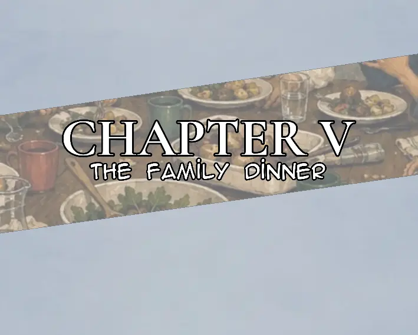
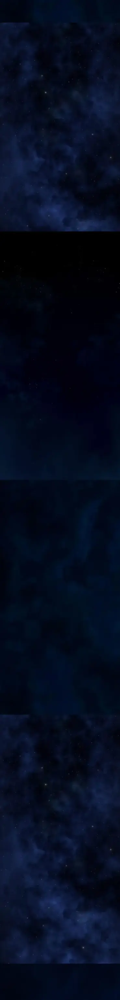

Lucas woke up.
For a few seconds, he simply stared at the ceiling, not really thinking about anything.
Then, for some reason, he smiled.
It wasn't a big smile. Nothing exaggerated. Just a small one that appeared on his face before he even realized he was doing it.
He sat up in bed and rubbed his eyes.
The room was quiet.
Actually... the whole house seemed quiet.
Lucas got out of bed and walked into the sitting room. He looked around.
Nobody.
No voices. No television. No footsteps. Nothing.
He stood there for a moment.
He liked it.
There was something about having the entire house to himself that gave him a strange sense of peace. He didn't have to talk to anyone. He didn't have to explain himself. He didn't have to listen to anyone talking either.
Just silence.
Lucas smiled again.
"Nice."
He turned around and went back to his room.
He opened his wardrobe and changed into his clothes for the day. He took his time doing it, strangely without the usual feeling that he was already tired of the day before it had even started.
When he finished, Lucas sat on the edge of his bed.
Then he remembered something.
He reached into the place where he kept his money.
He took it out and looked at it.
He had barely used any of it.
There hadn't really been a reason to. Lucas wasn't the kind of person who went around buying things just because he had money. Most of the time, the only thing he cared about buying was food.
Food was useful.
Everything else was optional.
He counted some of it absentmindedly before putting it back together.
For the first time, though, he actually thought about spending some of it.
Not because he needed anything.
He just felt like it.
Lucas looked at the money for another second before putting it into his pocket.
Today was going to be different.
He was going back to the university.
And he was going to see Bella again.
That thought alone was enough to make him smile.
Lucas stood up.
"Alright."
He grabbed what he needed and left his room.
For once, he wasn't walking out of the house because he had somewhere he needed to be.
He actually wanted to go.
And somehow, that felt a little strange.
Bella Beaumont woke up in her bed.
She stayed there for a moment, staring at the ceiling before finally sitting up.
She was still wearing her pajamas.
The morning was quiet, and Bella slowly got herself moving. She got out of bed, grabbed what she needed, and headed to the bathroom.
After bathing, she returned to her room and began fixing her hair.
She looked at herself in the mirror as she worked on it, occasionally adjusting a strand that refused to stay where she wanted it.
It took a little while, but eventually she was satisfied.
Bella got dressed.
Then she went downstairs and had something to eat.
It was a normal morning.
Nothing strange.
Nothing that seemed worth remembering.
But there was one thing Bella kept thinking about.
Lucas.
They had planned to meet again today.
And now that she was finally ready, she couldn't help feeling a little excited about it.
She finished eating, picked up her things, and checked herself one last time.
She was ready.
Bella took a breath.
"Alright."
She was going to see Lucas again.
Bella finished getting ready.
She picked up her things and was about to leave her room when she noticed something.
It was quiet.
Really quiet.
Bella stopped.
She looked down the hallway.
"Bennett?"
No answer.
"Beth?"
Still nothing.
Bella walked through the house, checking the rooms as she called for them again.
Nothing.
She eventually reached the sitting room and looked around.
Nobody was there.
It seemed like she was the only person in the house.
Bella pulled out her phone and checked it, wondering if they had gone somewhere without telling her.
She shrugged.
"Okay..."
There wasn't much she could do about it.
Bella walked toward the front door, opened it, and stepped outside. Before leaving, she turned around and looked back into the empty house.
Then she locked the door.
She checked it once to make sure it was properly locked before putting the keys away.

Bella started walking.
As she made her way down the street, she took out her phone and looked at her messages.
She had already been talking with Lucas about meeting up again.
The library.
That was where they had decided to meet.
Bella typed another message.
Bella: Are you still going to the library?
A moment later, her phone buzzed.
Lucas: Yeah.
Bella smiled slightly.
Bella: Good. I'm going too.
She put her phone away and continued walking.
Lucas was already on his way as well.
Neither of them had anything particularly important to say to each other through their messages. It was mostly just making sure they were actually going to meet.
Eventually, Bella reached Oakwood Public Library.
She slowed down as she approached the entrance.
And then she saw him.
Lucas was there.
He stood near the library entrance, looking as relaxed as ever.
Bella stopped for a second.
Lucas noticed her.
He gave her a small smile.
"You made it."
Bella smiled back.
"Yeah. You too."
Lucas looked around.
"I thought you'd be late."
"I wasn't."
"You were almost late."
Bella frowned at him.
"I wasn't."
Lucas shrugged.
"Sure."
Bella rolled her eyes.
The two of them stood there for a moment before finally walking toward the library together.
Just like they had planned.
Bella walked up to Lucas and, without saying anything, gave him a hug.
Lucas hugged her back.
"Hey," Bella said.
"Hey."
They pulled away from each other.
"You been waiting long?" Bella asked.
"Nah."
"Good."
They stood outside the library for a little while, talking about nothing particularly important. Just random things that came to mind, occasionally making each other laugh.
After a while, Bella remembered something.
"Oh, by the way, nobody's home."
Lucas looked at her.
"What?"
"I was the only one there when I left. I called for Bennett and Beth, but they weren't there."
"So you're just leaving the house empty?"
"I locked it."
"That's not what I meant."
Bella shrugged.
"Well, I guess I'm the one who's supposed to guard the house whenever nobody's there."
Lucas looked at her for a moment.
"That sounds like a terrible job."
"It is."
She smiled.
"So I thought it would be better if we just went there."
Lucas raised an eyebrow.
"To your house?"
"Yeah."
"Wouldn't it be weird if someone comes back and finds the two of us there alone?"
Bella thought about it.
"We'll just stay in the sitting room. Then they won't have much to worry about."
Lucas looked unconvinced.
"You've already thought this through?"
"Of course."
"You didn't."
"I did."
"You definitely didn't."
Bella laughed.
"Come on."
She started walking, and Lucas followed beside her.
They talked as they went.
Nothing serious.
Just random things that kept coming up as they walked. University, people they had seen, things that had happened recently, and whatever else they could think of.
Eventually, they reached Bella's house.
Bella unlocked the door and stepped inside.
She looked around.
Still quiet.
Nobody had come back yet.
Lucas entered behind her.
Bella closed the door.
"You hungry?" she asked.
"A little."
"A little?"
"Yeah."
"You either are or you aren't."
"I don't know. I haven't decided yet."
Bella laughed.
"That's not how hunger works."
Lucas shrugged.
They walked into the sitting room.
Bella sat down while Lucas looked around before taking a seat as well.
For the first time that morning, the house didn't feel quite as empty.
They kept talking.
About food.
About university.

About people.
About stupid things that didn't really matter.
And for a while, neither of them had any reason to think that anything unusual was going to happen.
Lucas was left sitting in the sitting room, watching television while Bella went upstairs to her bedroom.
He wasn't really paying attention to what was on.
The television was mostly just there to fill the silence.
Lucas leaned back on the couch.
A few minutes passed.
Then the front door opened.
Lucas looked toward it.
Bennett walked inside.
"Oh, sup, dude," Bennett said when he noticed him.
"Hey."
Bennett looked at Lucas, then glanced around the sitting room.
"Are you here with Bella?"
"Yeah, I am."
Bennett raised his eyebrows.
"Wow."
Lucas looked at him.
"What?"
"Didn't expect Bella to have a male friend."
Lucas gave him a blank look.
"Why?"
"I don't know. I always thought she was a loner."
Before Lucas could answer, a voice came from outside.
"Hurry up, Bennett!"
Bennett looked toward the door.
"Yeah, yeah. I'm coming."
He turned back toward Lucas.
"I need to get going."
"Alright."
Bennett started toward the stairs.
Lucas returned his attention to the television.
A few seconds later, he heard Bennett laughing upstairs.
Lucas looked toward the ceiling.
"What the hell..."
Before he could think much about it, Bella came downstairs.
"You ready?" she asked.
"Yeah."
Bella walked toward the door.
Just as they were about to leave, the front door opened.
Benjamin and Bianca entered the house.
Bella stopped.
"Dad... Mom."
Both of them looked at her.
Then they noticed Lucas.
There was a brief pause.
Neither of them seemed surprised.
In fact, Bianca smiled.
"Afternoon."
She walked over and hugged Bella.
"Afternoon, Mom."
Benjamin walked past them and headed toward the sitting room.
Lucas stood up slightly as he approached.
Benjamin looked at him.
"What was your name?"
"Lucas Asterisks."
Benjamin extended his hand.
"I'm Benjamin Beaumont."
Lucas shook his hand.
"Nice to meet ya."
"Likewise."
Benjamin gave him a friendly smile.
Then he looked toward Bella.
"Would you mind joining us for dinner?"
Bella looked at him.
There was a moment where she seemed like she was about to say something.
Before she could, Bianca spoke.
"Bella, why don't you go help me in the kitchen?"
Bella looked at her mother.
"Mom..."
"Come on."
Bianca gently took her by the arm and led her toward the kitchen.
Bella looked back at Lucas as she went.
Lucas simply shrugged.
Benjamin turned back toward him.
"So?"
Lucas looked at him.
"What?"
"Dinner."
Lucas thought about it for a second.
"Yeah. I wouldn't mind."
"Good."
Benjamin sat down beside him.
Lucas sat back down as well.
Benjamin picked up the remote and looked at the television.
"So, what do you like watching?"
Lucas looked at the screen.
"Honestly? I read books more often."
"Not a fan of television?"
"Not really."
Benjamin smiled.
"I see."
He changed the channel anyway.
Lucas leaned back into the couch.
The conversation continued casually.
Benjamin asked him a few simple questions.
Where he studied.
What he liked doing.
How he knew Bella.
Nothing that seemed unusual.
Lucas answered without thinking much of it.
Meanwhile, in the kitchen, Bianca placed something on the counter.
Bella watched her.
"Why are you making dinner now?"

"Because we have a guest."
Bella frowned slightly.
"Dad invited him."
"Yes."
There was something about the way Bianca said it that made Bella pause.
She looked toward the sitting room.
Through the doorway, she could see Benjamin sitting beside Lucas.
Talking to him.
Smiling.
Everything looked completely normal.
And yet, somehow, Bella couldn't shake the feeling that her parents had decided something before they had even walked through that door.
She turned back toward her mother.
"Mom?"
Bianca smiled.
"Just help me with dinner."
Bella sighed.
"Fine."
Back in the sitting room, Benjamin continued talking to Lucas.
Neither of them noticed the brief glance Bianca gave Benjamin from the kitchen.
It lasted only a second.
But Benjamin understood it.
Dinner was happening.
And Lucas was staying.
Time passed.
By the time the food was ready, it was already dark outside.
The Beaumont family had gathered around the dinner table, with Lucas sitting among them.
Everything seemed normal.
The plates were filled, everyone had something to drink, and conversation moved around the table.
Lucas picked up his drink and took a sip.
Bella watched him from across the table.
Something didn't feel right.
She couldn't explain it.
Her parents were acting normally. Too normally.
Bella lowered her eyes toward her plate.
Then she spoke directly into Lucas's mind.
"This is suspicious."
Lucas looked at her.
*You think?*
"Maybe you should leave."
Lucas glanced toward Benjamin and Bianca.
*And say what?*
"I don't know. Fake a phone call or something."
Lucas almost smiled.
*That's your plan?*
"Do you have a better one?"
Lucas thought about it.
*Not really.*
Bella looked back down at her food.
"Then make something up."
Lucas reached for his drink again.
He took another sip.
Then he stopped.
His expression changed.
Bella noticed immediately.
"Lucas?"
He didn't answer.
Lucas blinked.
The room suddenly seemed to shift around him.
The voices at the table became distant.
He tried to focus.
"Lucas?"
Bella's voice reached him, but it sounded far away.
His hand loosened around the glass.
It slipped from his fingers.
The glass hit the table.
Lucas suddenly collapsed.
"Lucas!"
Bella shot up from her chair.
But before she could even reach him, her own body suddenly went weak.
Her vision blurred.
She stumbled.
"Bella?"
She collapsed as well.
For a moment, nobody moved.
Benjamin looked at Lucas.
Then at Bella.
Bianca calmly stood from her chair.
"Take her to the car."
Benjamin nodded.
He walked over and lifted Bella from the floor.
Beth entered the room moments later, stopping when she saw what had happened.
She looked at her parents.
"What happened?"
Bianca turned toward her.
"Beth, honey, can you please get ready?"
Beth looked confused.
"Ready for what?"
"We're going to the family house."
Beth hesitated.
"The family house?"
"Yes."
Bianca walked toward the doorway.
"Go get your things."
Beth looked once more at Bella lying unconscious in Benjamin's arms.
Then she nodded.
"Okay."
Benjamin carried Bella toward the front door.
Bianca followed.
Lucas remained unconscious at the table.
The house, which had been so quiet that morning, was now preparing for something none of them had been told about.
And whatever was waiting at the family house...
They were taking Lucas and Bella with them.

Bianca's car was parked outside the Beaumont house.
Benjamin and Bianca were already standing near the front door, waiting.
They both looked toward the house.
"She's taking forever," Benjamin said.
Bianca glanced toward the stairs.
"Beth always takes forever when you tell her to get ready quickly."
Benjamin sighed.
They waited.
A few moments later, Beth finally appeared.
She was carrying her teddy bear with her.
She walked toward the car, passing through the doorway and heading straight for the boot.
Benjamin and Bianca went back inside the house.
Beth opened the boot.
She placed the teddy bear inside.
Then she closed it.
A moment later, Elsa came from around the back of the house.
She looked around to make sure nobody was watching before quickly getting into the car.
The teddy bear remained hidden inside the boot.
Elsa stayed quiet.
Inside the house, Benjamin and Bianca continued getting everything ready.
Eventually, they came back outside.
Beth was already waiting.
"Ready?" Bianca asked.
"Yeah."
Everyone got into the car.
The engine started.
The Beaumont house slowly disappeared behind them as the car pulled away into the dark streets.
They were heading to the family house.
And nobody outside knew where they were going.
Or what they were taking with them.
----
Hours passed before the car finally arrived at the Beaumont family house.
The headlights swept across the front of the large property before Bianca pulled into the driveway.
There were already several cars parked outside.
Benjamin looked out through the window.
"Looks like we're not the last ones."
Bianca turned off the engine.
"Good. I was beginning to wonder if everyone had forgotten."
The doors opened and everyone started getting out.
People were already gathered around the house, talking amongst themselves.
Some were standing near the entrance.
Others were carrying bags inside.
A few children were running around the yard while their parents called after them.
"Don't run so close to the road!"
"I told you to stay with your sister!"
"Has anyone seen Uncle Michael?"
"He's inside."
"Did you bring the food?"
"It's in the back."
The house was alive with people.
Beth helped Bella out of the car.
Bella looked around.
She was still trying to understand what was happening.
"Are you okay?" Beth asked.
Bella nodded.
"I think so."
Beth stayed beside her.
"Everything's going to be okay."
Bella looked at her.
"You keep saying that."
"Because it's true."
Beth gave her a small smile.
"You just have to pretend."
"Pretend what?"
"Like everything is normal."
Bella stared at her.
Beth lowered her voice.
"Just go with the flow. Don't make a scene. Don't ask too many questions."
Bella looked toward the house.
There were relatives everywhere.
She recognized some of them, while others she had never seen before.
An older woman was sitting near the entrance talking to another relative.
"Your hair has gotten so long."
"I know. I've been meaning to cut it."
"You said that last year."
"I know."
Nearby, two men were arguing about something completely unrelated.
"You can't tell me that was offside."
"It was clearly offside."
"You weren't even there."
"I watched the whole thing!"
A woman carrying a tray walked past them.
"Could you two argue somewhere else? You're blocking the doorway."
"Sorry."
Beth pulled Bella along.
"Come on."
Behind them, the teddy bear that had been placed inside the car's boot had somehow made its way out.
Elsa carried it with her.
She quietly slipped away from the others and entered the house.
Nobody paid much attention to her.
Inside, Elsa began wandering through the house.
She looked around at the unfamiliar rooms, the decorations, the old furniture and the people moving around.
She passed several relatives talking.
"Where are you going?"
"I'm looking for the kitchen."
"It's down the hall."
"Thanks."
Elsa continued walking.
Meanwhile, Benjamin opened the car door.
Lucas was still unconscious.
Benjamin carefully lifted him out.
The moment he carried Lucas through the entrance, the atmosphere around him changed.
People noticed.
Conversations slowly died down.
Several relatives turned to look.
Their eyes followed Benjamin.
And then they looked at Lucas.
For a few seconds, nobody said anything.
Some smiled.
Not friendly smiles.
Others remained completely serious.
An older man standing near the hallway whispered,
"So that's him."
Another person beside him nodded.
"Yes."
Someone else folded their arms.
"He looks younger than I expected."
"He is."
"Are you sure?"
Benjamin didn't respond.
He simply continued carrying Lucas.
A woman moved aside to give him room.
"Basement?"
"Yes."
She nodded.
"It's ready."
Benjamin carried Lucas down the stairs.
The further he went, the quieter the house became.
At the bottom was the basement.
Candles had already been placed throughout the room.
Dozens of them.
Some were arranged around the walls.
Others surrounded a large open space in the middle.
Several family members were already down there, preparing everything.
One man adjusted a candle.
"Move that one closer."
"Like this?"
"Little more."
"Here?"
"Perfect."
Another person walked past carrying a box.
"Careful with those."
"I know."
Benjamin entered carrying Lucas.
Everyone in the basement looked toward him.
The conversations stopped.
Benjamin walked farther inside.
Someone approached him.
"We've been waiting."
"I know."
"Is he unconscious?"
"Yes."
The person looked at Lucas.
"Good."
Benjamin continued toward the center of the room.
Upstairs, Bella was still walking with Beth.
Beth stayed close to her.
"You remember what I told you?"
Bella looked at her.
"What?"
"Don't open your eyes."
Bella frowned.
"During the ritual?"
Beth nodded.
"Especially during the ritual."
"Why?"
Beth hesitated.
Then she lowered her voice.
"They say you might see things humans aren't supposed to see."
Bella stared at her.
"What kind of things?"
Beth shook her head.
"I don't know."
"You don't know?"
"No."
She looked toward the basement stairs.
"And honestly, I don't want to."
Bella became quiet.
From somewhere deeper inside the house, they could hear people talking and laughing.
Someone called out from the dining room.
"Is everyone eating before or after?"
"After!"
"Why after?"
"Because we're still waiting for the others!"
"Oh."
A burst of laughter followed.
Bella looked around.
The house felt strangely normal.
People were talking.
People were eating.
People were greeting relatives they hadn't seen in months.
Children were playing.
Someone was complaining about the weather.
Someone else was asking where the bathroom was.
And downstairs...
Candles were waiting.
Lucas was waiting.
And the family was preparing for the ritual.
----
Somewhere else inside the Beaumont family house, Elsa was sitting with the teddy bear.
She had placed it beside her while she looked around the room.
A few children were nearby.
They had been watching her for a while.
One of them whispered,
"Is she talking to that thing?"
"I think so."
"It's just a teddy bear."
"No, look."
The children peeked around the corner.
Elsa was talking to the teddy bear.
And the teddy bear was talking back.
Eljin suddenly turned his head.
He stared directly at the children.
Elsa noticed.
"What is it?"
Eljin lowered his voice.
"I think those kids are looking at us."
Elsa looked over.
The children immediately tried to pretend they weren't watching.
Elsa smiled.
"Hey."
They looked at her.
"Come here."
The children hesitated.
"It's okay."
One of them slowly walked over.
Then another.
Soon, all of them had gathered around Elsa.
One little boy pointed at Eljin.
"Does he really talk?"
Eljin looked at him.
"Yes."
The boy's eyes widened.
"You heard that?"
Another child immediately grabbed Elsa's arm.
"Can I hold him?"
Elsa laughed.
"Sure."
She handed Eljin over.
The child stared at him.
"He's actually talking!"
"I told you," another kid said.
The children immediately became fascinated.
"How does he talk?"
"Can he walk?"
"Does he sleep?"
"Can he eat?"
Eljin looked annoyed.
"Why are there so many questions?"
The children burst out laughing.
Elsa smiled as she watched them.
One of the girls looked at Elsa.
"You're lucky."
"Why?"
"You have a talking teddy bear."
"Yeah."
"I wish I had one."
"Me too."
Another child looked at Elsa with obvious jealousy.
"My parents would never buy me something like that."
Elsa shrugged.
"I didn't buy him."
The children looked at her.
"You didn't?"
"No."
"Then where did you get him?"
Elsa looked at Eljin.
Eljin simply stared back.
"It's a long story."
The children immediately started talking over each other.
"Tell us!"
"Yeah, tell us!"
"How did you get him?"
Elsa laughed.
"Maybe later."
They continued playing together.
For a little while, the ritual preparations happening elsewhere in the house seemed completely distant.
Then one of the older children suddenly remembered something.
"Oh, you're supposed to be downstairs later, right?"
Elsa looked at him.
"I don't know."
"My mom said the ritual needs eight family members close to you."
Elsa stopped.
"Eight?"
"Yeah."
The other children nodded.
"Eight family members."
"They have to be close to you."
Elsa looked at Eljin.
He was already looking back at her.
Neither of them said anything.
The children, however, had already gone back to playing.
Elsa slowly smiled.
"That's a lot of people."
Eljin's voice came quietly from beside her.
"Yeah."
Elsa looked around the busy house.
There were certainly enough family members here.
---------
The night had gone quiet around the garage.
Travis and the others were waiting outside, watching the road while they waited for the Black Templars to arrive.
Fletcher stood against the side of the garage, smoking.
Thomas was sitting a short distance away, keeping his eyes on the coffin inside the garage every few seconds as if he expected it to suddenly stand up and walk away.
Alan sat on an old wooden crate, coughing into his hand.
Jason, meanwhile, was staring at Travis.
Travis was sitting on a goat.
Not beside it.
Not leaning against it.
Actually sitting on it.
He had one leg hanging over either side of the goat like he was riding a horse.
Jason stared at him for several seconds.
"What the fuck are you doing?"
Travis looked down at him.
"Riding my horse."
Jason looked at the goat.
"That's a goat."
"Yeah."
"So why are you riding it?"
Travis shrugged.
"What's the difference?"
Jason stared at him.
"One is a goat."
"And the other is a horse."
"Exactly."
"They're basically the same breed."
Jason slowly shook his head.
"No, they're not."
"They used to be."
"Used to be what?"
"Horses."
Jason blinked.
Travis leaned forward slightly, gripping the goat's horns.
"Back in ancient times, horses and goats were the same animal. Then some rich asshole separated them."
Jason stared at him.
"And what did they call them?"
Travis thought for a moment.
"Unicorns."
Jason just looked at him.
Fletcher took another drag from his cigarette.
"Don't listen to him."
"I'm telling the truth," Travis said.
"No, you're not."
"How do you know?"
"Because unicorns aren't real."
Travis looked offended.
"That's exactly what they want you to think."
Jason rubbed his forehead.
"I don't know why I came back here."
"Because you were hungry."
"I hate that you're right."
Alan suddenly coughed again.
It was worse this time.
He bent forward, covering his mouth with his hand.
Fletcher glanced over.
"You good?"
Alan nodded while still coughing.
"Fantastic."
Travis looked over at him.
"Don't worry, brother. You'll be rich in no time."
Alan wiped his mouth.
"I'd rather be alive."
"You can be both."
Thomas looked toward the road.
"How long are they taking?"
Travis checked his watch.
"Rich people are always late."
"They're not rich people."
"They're paying us ten million crowns each."
Travis smiled.
"That's rich people."
Fletcher shook his head.
"You really don't care who these people are, do you?"
Travis looked at him.
"They're giving me money."
"That's your entire moral system?"
"Pretty much."
A pair of headlights appeared in the distance.
Travis immediately straightened up.
The goat took a few steps forward.
"Here they come."
Fletcher dropped his cigarette and stepped on it.
Thomas stood up.
Jason looked toward the road.
Three vehicles slowly approached the garage before stopping.
Men dressed in dark clothing stepped out.
The Black Templars had arrived.
Travis's face lit up.
He turned toward the others with a huge grin.
"See?"
He pointed at the vehicles.
"Just smile."
Jason frowned.
"Why?"
"Because boys' mommy is here with our money."
Fletcher sighed.
"Jesus Christ."
Travis waved enthusiastically toward the approaching men.
"HEY!"
One of the Black Templars walked toward them.
He looked serious, almost irritated by Travis's enthusiasm.
Travis didn't care.
The man stopped in front of him.
"Travis Dell Deyvon?"
"That's me."
The man extended his hand.
Travis immediately shook it.
Hard.
Almost too hard.
"Pleasure doing business with you."
"We brought what was promised."
Travis's smile grew wider.
"Beautiful."
He looked past the man toward the vehicles.
"So where's my money?"
The Templar gave him a brief look.
"You don't even want to discuss the coffin first?"
"No."
Travis looked at him.
"Money first."
The man stared at him.
Travis stared back.
Then Travis smiled.
"Unless your occult gods are going to burn my ass for asking."
The Templar's expression didn't change.
"We have no intention of harming you."
"Great."
Travis rubbed his hands together.
"Show me the money."
One of the Templars opened the back of a vehicle.
Several heavy cases were pulled out.
Travis's eyes practically widened.
He stepped toward them.
"Oh, fuck me."
Jason looked over.
"That's a lot of money."
Travis nodded slowly.
"I love these people."
Fletcher shook his head.
"You don't even know them."
"I know enough."
The Templars opened one of the cases.
Stacks of crowns filled it.
Travis stared.
For once, he was completely silent.
Then he turned toward Fletcher.
"Brother."
"What?"
"We're rich."
Fletcher smirked.
"Apparently."
Travis turned back to the Templars.
"Now you can have your coffin."
One of the Templars motioned toward the garage.
"Take us to it."
Travis pointed inside.
"Right this way."
They entered the garage.
The coffin sat exactly where they had left it.
Covered in chains.
Its lid was covered with extra nails.
The Templar stopped when he saw it.
"What happened to the coffin?"
Travis looked at the nails.
"Oh, those."
He waved his hand casually.
"That's my paranoid friend."
He pointed at Thomas.
Thomas immediately looked at him.
"What?"
"You did all that."
"I did it because it was—"
Travis cut him off.
"Paranoid."
The Templar looked at Thomas.
Then back at Travis.
"Why did he put so many nails into it?"
Travis shrugged.
"Because he's paranoid."
Thomas frowned.
"I'm not paranoid."
"You nailed a coffin shut because you heard knocking from inside it."
Thomas went quiet.
The Templar looked at the coffin again.
"We were told it was intact."
"It is intact."
Travis placed a hand on the coffin.
"Just got some extra security."
The Templar looked unimpressed.
"Remove the nails."
Travis stepped back.
"Nope."
"What?"
"Take it or leave it."
The Templar stared at him.
Travis smiled.
"Your money is outside. My coffin is here. Everybody goes home happy."
For several seconds, nobody said anything.
Finally, the Templar nodded.
"Fine."
Two of his men moved toward the coffin.
They began removing the chains.
Thomas immediately stepped back.
Jason watched them.
Fletcher folded his arms.
Travis simply stood there, smiling.
The Templars struggled to lift the coffin.
"Careful," Thomas said.
One of the men grunted.
"I've got it."
The other man adjusted his grip.
"On three."
"One."
"Two."
"Three."
They lifted.
The coffin came off the ground.
For a moment, everything seemed fine.
Then one of the men lost his grip.
"Wait—"
The coffin slipped.
It crashed onto the floor.
BANG!
The impact shook the garage.
A crack appeared along the side of the coffin.
Everyone froze.
Thomas's face dropped.
"Oh, shit."
Travis looked at the crack.
Then at the Templars.
Then back at the coffin.
"Well..."
The Templar crouched beside it.
"It's fine."
He ran his hand near the crack.
"Nothing serious."
Thomas stared at him.
"You don't know that."
The Templar ignored him.
"Lift it again."
The men reached down.
Then stopped.
One of them looked around.
"Do you feel that?"
Fletcher frowned.
"What?"
The temperature in the garage had suddenly dropped.
Their breath became visible.
Alan stopped coughing.
Jason rubbed his arms.
"What the hell?"
Travis looked around.
"Did somebody leave the freezer open?"
Nobody answered.
The Templar slowly looked down at the coffin.
His expression changed.
He reached toward it.
Then pulled his hand away.
"It's cold."
Travis looked at him.
"So?"
The Templar stared at the coffin.
"No."
He shook his head.
"This isn't normal."
Thomas whispered.
"I told you."
The Templar stepped backward.
His breathing became heavier.
"This coffin..."
He looked at the crack.
Then at the strange carvings.
His face had gone pale.
"This isn't right."
Travis frowned.
"What?"
The Templar backed away again.
"It's unholy."
Silence.
Even Travis stopped smiling.
The Templar suddenly turned around.
"Get in the car."
One of his men looked confused.
"Sir?"
"NOW!"
He ran toward the vehicle.
The others looked at each other before scrambling after him.
One of them shouted.
"But the coffin!"
"Leave it!"
The Templar jumped into the driver's seat and started the engine.
The tires spun against the dirt.
He drove away.
His men were left standing behind.
Travis watched the vehicle disappear down the road.
He looked at Fletcher.
Fletcher looked at him.
Jason looked at Thomas.
Thomas looked at the coffin.
Alan slowly broke the silence.
"So..."
Travis scratched his chin.
"They're not taking the coffin?"
Fletcher stared at him.
"No shit."
Travis looked down at the money cases sitting nearby.
Then at the coffin.
Then back at the money.
He smiled.
"Well."
He picked up one of the cases.
"We still got paid."
Jason stared at him.
"You've got to be fucking kidding me."
Travis shrugged.
"Business is business."
Behind them, the cracked coffin remained on the floor.
Nobody noticed that the three nails closest to the crack had begun to slowly lift themselves out.
-------------
The basement had gone completely silent.
Not the comfortable kind of silence.
The kind that made every small sound feel enormous.
Candles surrounded the room, their flames flickering despite there being no wind. Shadows stretched across the walls, moving whenever someone shifted, making it difficult to tell where the darkness ended and the people began.
Lucas sat in the middle of the circle.
His head hung forward.
He hadn't moved since Benjamin placed him there.
Around him stood the Beaumont family.
Eight of them.
They held hands, forming a perfect circle around him.
Bella stood among them.
Her palms were cold.
She could feel the fingers of the family members beside her trembling slightly.
Nobody spoke.
Then Bianca began.
She spoke in a language Bella didn't understand.
The words came slowly at first.
Then faster.
The others joined her.
Their voices blended together until Bella couldn't distinguish one person from another.
The candles flickered harder.
Lucas remained completely still.
Bella stared at him.
Something about the room felt wrong.
Not scary.
Not exactly.
It felt like something was there.
Something that wasn't supposed to be.
Bianca's voice grew louder.
The family repeated the words after her.
Bella swallowed.
Don't open your eyes.
Beth's warning came back to her.
Whatever happens, don't open your eyes.
Bella shut them tightly.
The voices continued.
The air became colder.
She could hear someone breathing heavily across the circle.
Someone whispered something.
Then the whispering stopped.
Everything became silent.
Bella opened her eyes.
She immediately regretted it.
Lucas was still sitting in the middle.
But something was standing behind him.
A shadow.
It wasn't shaped like a person.
Not completely.
It was tall and thin, almost impossibly tall, its edges constantly shifting as if it couldn't decide what shape it wanted to take.
Bella couldn't see a face.
There wasn't one.
The shadow leaned toward Lucas.
Bella's heart stopped.
She couldn't move.
She couldn't even scream.
The thing lowered itself behind Lucas.
Then it entered him.
It didn't attack him.
It simply disappeared into his body.
Lucas's head suddenly lifted.
His eyes remained closed.
Bella stared at him in horror.
The family continued chanting.
None of them seemed to notice.
The candles began burning normally again.
Bianca spoke the final words.
The family repeated them.
Then—
Silence.
The ritual was over.
Everyone stood still.
For several seconds, nobody moved.
Then Lucas coughed.
"—cough!"
His body jerked forward.
Everyone opened their eyes.
Lucas took another breath.
He looked around the room.
Then he slowly sat upright.
Bella stared at him.
He looked completely normal.
No glowing eyes.
No strange voice.
Nothing.
Just Lucas.
Bella suddenly let go of the hands beside her.
"Lucas!"
She ran toward him.
Lucas barely had time to react before Bella wrapped her arms around him.
He blinked.
"Uh..."
She held him tightly.
Lucas looked over her shoulder at the family.
Everyone was staring.
Bella pulled away slightly.
Lucas noticed her face.
She was crying.
He frowned.
*What's wrong?*
Bella heard his voice inside her head.
"They did a ritual."
Lucas looked around the basement.
Then back at her.
*Oh.*
A pause.
*That's weird.*
Bella stared at him.
"That's all you're going to say?"
Lucas shrugged slightly.
"What else am I supposed to say?"
Bianca suddenly raised her voice.
"Everyone, be quiet!"
The room immediately fell silent.
She stared at Bella.
Then at Lucas.
Her expression slowly changed.
She stepped toward them.
"Who are you?"
Lucas looked at her.
Then looked left.
Then right.
Then back at Bella.
"I'm Lucas Asterisk."
Nobody moved.
The room erupted.
"What?"
"That can't be possible."
"It failed?"
"It has never failed!"
"Something went wrong!"
Bianca turned toward the others.
"Everyone calm down!"
"We followed the instructions!"
"No, we didn't!"
"The ritual has never failed before!"
Bella stood beside Lucas, confused by the sudden panic.
Lucas looked at her.
*What the hell is happening?*
Bella didn't answer.
She didn't know either.
Becca suddenly stepped forward.
Her face was pale.
"Everything was done wrong."
Everyone turned toward her.
Bianca frowned.
"What are you talking about?"
Becca stared at Lucas.
"Great-great-grandfather Baldwin had already set his eyes on him."
The room went silent again.
Bella's stomach dropped.
Becca continued.
"He was protecting him."
Someone shook their head.
"That's impossible."
"No," Becca said. "That's exactly what happened."
She looked at Bella.
"Whatever entered him was stopped."
Bella's eyes widened.
"So... he's safe?"
Becca didn't answer immediately.
Instead, she looked at Lucas as if she were trying to understand something that shouldn't exist.
Benevide stepped forward.
"Then how is it that he hasn't changed yet?"
Nobody answered.
Lucas looked around at all of them.
"Changed into what?"
Silence.
He looked at Bella.
Then at the family.
"Seriously."
Nobody spoke.
The candles continued burning.
But somewhere behind Lucas, on the wall—
his shadow moved.
A second too late.
Bella noticed.
Her face went pale.
Lucas's shadow slowly returned to normal.
Nobody else saw it.
Nobody except her.
The argument continued.
Nobody seemed to know what to do.
"Something went wrong."
"Nothing went wrong!"
"Then explain why he is still himself!"
"I don't know!"
"The ritual has never failed!"
Becca looked around at everyone.
"That's because you don't understand what you're dealing with!"
Benevide stepped forward.
"And you do?"
Becca stared at him.
"I know enough to know that Baldwin interfered."
Bianca shook her head.
"This is ridiculous. We followed the ritual exactly as it was written."
"No, we didn't."
"Then what did we miss?"
"I don't know!"
The voices grew louder.
Everyone was talking over each other now.
Lucas stood beside Bella, watching them argue.
Bella looked around the room.
Something felt wrong again.
The candles suddenly flickered.
She looked at them.
Then at Lucas.
"Lucas..."
He looked at her.
*Yeah?*
"I think we should go."
Lucas glanced toward the family.
*Probably.*
Bella grabbed his hand.
They slowly stepped backward.
Nobody noticed.
The family was too busy arguing.
"Maybe we need to perform it again."
"You can't perform it twice!"
"Why not?"
"Because that's not how it works!"
"Then what do we do?"
A candle went out.
Everyone stopped.
Another candle went out.
Then another.
The room became darker.
Bianca looked around.
"What is happening?"
Nobody answered.
The temperature suddenly dropped.
Everyone began breathing visible clouds into the air.
Benevide rubbed his arms.
"It's freezing."
The lights flickered.
Then—
everything went black.
Someone screamed.
"What the hell?!"
A violent wind suddenly tore through the basement.
Papers flew from tables.
Books were thrown against the walls.
Candles rolled across the floor.
The family members struggled to keep their balance.
"What's happening?!"
"Get the lights!"
"I can't see!"
Something slammed into the wall.
Then another thing.
The basement was being torn apart.
Benevide looked around in panic.
"Everyone stay together!"
A shadow moved across the darkness.
Fast.
Too fast.
Benevide turned.
"What was—"
Something struck him.
His body was thrown across the room.
He hit the wall with a horrible crack and collapsed onto the floor.
"Benevide!"
The family screamed.
Bianca stumbled backward.
"No..."
She looked into the darkness.
A figure was standing there.
Not a person.
A shadow.
It slowly moved toward her.
Bianca froze.
"Grandpa Raker?"
The shadow stopped.
Bianca's voice trembled.
"It's me."
She raised her hands.
"Bianca."
The shadow didn't move.
"It's me, Grandpa Raker."
For a moment, everything became completely still.
Then the shadow slowly pulled away.
The wind stopped.
The room became silent.
Someone managed to light a candle.
Then another.
Soon the basement was dimly illuminated again.
Everyone looked around.
Benevide was lying motionless on the floor.
Bianca stood frozen in place.
Then someone noticed something.
"Where are they?"
Bianca turned.
The spot where Lucas had been sitting was empty.
Bella was gone too.
"What?"
Everyone looked around.
"They were right there!"
"They couldn't have left!"
Becca stared toward the stairs.
"They're gone."
Nobody understood how.
Then the candlelight shifted.
A shadow stretched across the floor.
It moved toward Benevide.
Someone noticed.
"Wait..."
The shadow crawled across him.
Benevide's body suddenly jerked.
The darkness sank into him.
Everyone stepped backward.
"No..."
The room fell silent.
Bella ran through the woods.
Lucas was beside her.
Branches slapped against their arms as they pushed through the darkness.
Neither of them knew exactly where they were going.
They just knew they needed to get away from the house.
"Faster!" Bella said.
"I'm trying!"
They continued running.
The trees seemed endless.
The moon was barely visible through the branches above them.
After a while, Lucas finally slowed down.
"Wait."
Bella stopped.
They both bent over, trying to catch their breath.
Lucas placed his hands on his knees.
"I haven't run like that in years."
Bella laughed breathlessly.
"You're complaining?"
"I'm not complaining."
"You sound like you're complaining."
"I'm observing."
Bella looked behind them.
Nothing.

Just darkness between the trees.
She looked back at Lucas.
"Do you think they're coming after us?"
Lucas straightened.
"I don't know."
A cold breeze passed through the woods.
Bella moved closer to him.
Lucas looked at her.
"You okay?"
She nodded.
"Yeah."
A pause.
Then she looked down.
"I was scared."
"Me too."
Bella looked surprised.
"You were?"
"Yeah."
Lucas looked back toward the direction they'd come from.
"That shit was weird."
Bella smiled faintly.
"Very weird."
They stood there for another moment.
Then a distant sound came from somewhere behind them.
A branch snapped.
Both of them looked back.
Lucas immediately grabbed Bella's hand.
"We should keep moving."
Bella nodded.
They started running again.
Through the trees.
Deeper into the dark.
"Shouldn't you be staying behind?" Lucas asked as they ran.
"No."
Bella tightened her grip on his hand.
"I want to be with you."
Lucas looked at her for a second.
Then faced forward again.
"Okay."
They kept running.
The woods swallowed them.
Behind them, the family house disappeared into the darkness.
And somewhere far away, beneath the trees, something moved.
Bella and Lucas never looked back.
They simply kept running into the dark night.

.png)
.png)
.png)
.png)